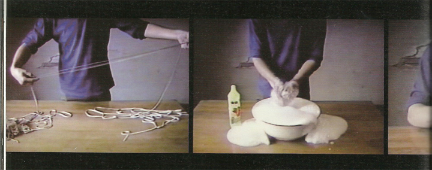

一个艺术家所经历的一些转折
李振华
而80年代这一来自不同地区的文化现象，显然已经构成了未来中国当代艺术的一个阶段性的主流。如果我们比较70年代末期和85时期，最明显的区分可能就是在艺术宣言方面，70年代末期对争取自由、独立创作精神的需要，和完全不在这个语境下工作的整个80年代，是否正好说明了意识形态上的变化？70年代末期对个人化需要和80年代更多样的现实，无论是直接的对抗，还是完全忘却的消解，都预示了革命时代的终结
常青画廊邀请颜磊为展会的“艺术私房”版块创作的油画被美国海关拦下，这件事看起来也没让颜磊觉得怎么样。倒是画廊的一个助手赶上了最后一班航班，手提着替代品上了飞机，从巴黎常青画廊的新空间Le Moulin赶了过来（地处巴黎郊外，正举行新画廊的开幕群展，颜磊是参展艺术家之一）。几乎没有人知道事情出了些差错。在滑稽的红白条式样的门幕内，作品急就章地布置展出，无意中暗示了驱使各大艺术活动不断上演的“展览必须继续下去”的精神。
不能忽略之前文化革命和来自更早各个层面文化之涟漪的效应，中国的当代艺术既不是90年代被理解的与世界接轨的态势，也不是今天被描述的对传统的回归。一方面是因为群体这一概念的消失，一方面则是因为当代所处的共时性的历史特征。群体的概念是何时消失的？这是否以艺术小组消失为代表？民众和与之对应的政治格局又如何？这些问题不能被简单的放入对艺术史的讨论中，但是作为一个大的框架，却是有必要被考虑到艺术史研究梳理的线索中。
2007年费大为先生策划的《85新潮》，其中的一个空间就提供了这样的一个时间上的线索，是对85时期的一个参照。当费大为要为85这个时间段提供一个系统研究的时候，当这个文化兴起的现象逐渐成为历史，反观这一语境下的当代中国艺术的发展，85的定义首先是一个时间上的逻辑，其次才是其潜在的意识形态和记忆构成的情感联系。这是中国当代艺术存在的一个内在的线索和联系，而我们也不能忽略当代全球化背景之下，中国被构建的另一个面孔。是在传媒兴起的当代文化中最重要的一个侧面，也就是我们惯常认知的事物开始出现两面，这也就解释了中国当代艺术现状中既得利者都很难在两个语境中同时存在的尴尬。第三个语境的出现近几年开始在中国兴起，主要围绕着经济系统的资金和艺术所构成的另一个被关注的现象。这为之前艺术和政治的关系，增加了一个纬度，同时也在上述中国内在和国际外在的语境上提供了另外的一种可能。
地缘上，西风东渐的倾向越来越明显，从艺术品的拍卖到现在香港画廊博览会的兴起，国际画廊进驻香港的现实，都预示着今日当代艺术格局上的变化。依附于艺术品交易和不断扩张的中国收藏家、美术馆、画廊系统的成长，逐渐让东西方语境不再明显，但其内在的意识形态并没有因此而被消除，反而在更大的国家政治，与经济需要时被夸大。这是为什么来自民间和政治高层的中国，海外的中国艺术家，国际艺术环境，都希望消除所谓的“中国性”（中国特征 Chineseness）的来源。
在新语境正在兴起，之前的语境也没有或不可能消除的情况下，应该看到的不是所谓中国的兴起（大国崛起），而是个体价值的被确立，这不仅仅是国家兴起的征兆，也应该是民主社会到来的前提。
对艺术家个人历史的梳理，应该超越既存中国当代艺术史的框架，和来自社会环境作为背景的因素。完成其来自各种语境上的联系，才能勾勒出存在于中国社会环境内，同时受到来自西方（或是中国以外）影响下，个体当代艺术创造的现实。
是时候和某些单一的线索说再见了，也是时候看待一个消除了上述线索的个体存在，当然这一依存的关系，不可能被消除，它是在被完全呈现的时候，自我终结的，所以我希望这一终结可以是我们理解艺术家的拐点和基础。
从1994年的录像开始，艺术家往往需要足够的理由来保藏其作品，毁坏作品的现象可以被看作是理性批判的一部分，而这来自于艺术家的内在需要，和对其创造物的无望感。在民生现代艺术馆《中国影像艺术1988－2011》（2011年）中展出的颜磊的作品《1500cm》（1994年），

被醒目的置于展厅入口处，颜磊在完全不保有作品的情况下，借助策展人郭晓彦的努力和邱志杰在1996年《现象·影像》的遗留，得以复原展出。
这一时期颜磊的工作还没有涉及更大的国际艺术政治，也不涉及对中国当代艺术进程的思考，其工作主要还是在媒介和艺术家身体上。作品《1500cm》中他不断的进食一根绳线，直到将其完全纳入口腔，肿胀感和艺术家面对镜头的凝视的眼神，与之前政治宣言式的艺术（集体化）运动开始割裂。
如果我们回望产生这一作品的时间，1994年刚好是1989年之后，刚好是“89艺术大展”之后，而且还在1993年的《后89中国新艺术展》之后。在1996年第一个录像艺术展览《现象影像》之前，与同时在北京出现的政治波普和玩世现实主义，以及艳俗艺术几乎同步。
是艺术家开始转向反政治化的需要，还是艺术家开始关注集体主义之外的自我身体、观念、媒介上表达的开始？颜磊往往不愿意阐释其作品的内在需要，也不愿意谈及外在的影响或是更庞大的关系。他的疏于解释和对自己作品的否定，逐渐的成为他工作的一个方法，这在很多项目如《国际酵母》（2004年）、《蓬皮杜》（2004年）、《尼斯艺术计划》（2004年）中可以看到，他的兴趣和关注一直存在一个特殊的文化关系中，而显然这一方法，在他早期的工作中是没有的。早期工作中他通过录像、摄影作品所展现的更像是一个艺术宣言，还不存在之后出现的方法，和艺术家故意疏离于作品之外的对艺术的理解，这可以被看作是从现代艺术逻辑转向当代的一个拐点，自1997年颜磊完成了这一转换。
如果比较颜磊和安迪·沃霍（Andy Warhol）在波普艺术方法和录像艺术、Warhol TV这类作品的关系，我们可以发现微妙的线索，那就是艺术家身体的介入、与作品故意保持着距离，以及作品中出现的神秘感。还有在反观其创造所发现的作品对未来的影响，都可以被看作是当代艺术近代发展的特别个体案例。
1997年卡塞尔邀请信
1997年香港回归，艺术家颜磊和洪浩创作了这个邀请信的作品，同年也正好是5年一次的第十届卡塞尔文献展（DOCUMENTA10）。如上所述，这一作品中艺术家完全处于隐蔽的状态，将100封邀请信件投递给当时中国当代艺术领域的艺术家（工作者）。
这个作品造成了一次认识上的地震，尤其在栗宪庭提出的与世界接轨的语境之后，在当代艺术的创作上，艺术家逐渐在适应国际和国内两个语境关系的交融，尤其在基于视觉艺术的领域，艺术家和策展人、批评家的思考多集中在几个方面，一方面是如何确立中国当代艺术这一概念，一方面是如何与世界接轨，还有就是民粹主义下的对自我和世界的理解。从这几个方面我们可以发现这些思考都不能脱开国际、中国对应的框架，都在寻找中国被替代为个体创造的位置可能性的方法，这些讨论和实践，都导致了后来出现的“中国性”（中国特征 Chineseness）的现象。而在90年代栗宪庭推出的一系列艺术概念：玩世现实主义、政治波普、艳俗等，都是对这一想象和策略的加强，同时也是对本来已经终结的集体主义的回望。
在与世界接轨的想象中，《邀请信》的出现有些突然。颜磊、洪浩在此之前并未有过在海外生活或是对整体文化政治的认识，至少在其表述和经历中还没有能看到他们对卡塞尔文献展或是整个海外文化的深度思考。我可以理解他们的创作在某种程度上是对当时出现的这一语境关系的抵抗和嘲讽（或许是恶作剧）。如果没有对整个艺术政治的深度了解，他们创作的直觉和自然对集体主义的消解，则可以被看作是基于中国当代艺术发展的一个线索。而不是简单的东西方文化的碰撞、接轨之类的对策略和方法的探索，这也注定了之后没有再出现此类作品，也许和两位艺术家的精神洁癖有关。
《邀请信》消除了东西方文化上的误解了吗？其实《邀请信》恰恰是对这一误解的加强，让当代艺术的创作开始脱离自我生长的环境，开始确立一个处于欧洲某一地的中心想象。而艺术家却是借助这一挪移中心关系，获得了个人的解放，并明确的和中国当代艺术的现实——即非中国也非西方的现象，说了再见。
回望这一作品，往往会被颜磊、洪浩的幽默所感染，而在1997年的中国，《邀请信》在很多人看来，一点都不能让人高兴起来。尤其是接到邀请信的人，在披露了真相之后的愤怒，可想而知。
如同杜尚（Marcel Duchamp）的小便池作品《泉》（1917年）在当时文化中的震颤一样，《邀请信》是在当时艺术体制内部的一次地震，其目的不是简单的恶作剧，当然也不如很多人所理解的伟大，它恰好是一个正要出现的中国当代艺术个人化进程的前奏，是全球化语境中，当代文化倾向上的征兆，尤其与很多海外中国艺术家的工作方法产生了共鸣。
他们的工作方式和杭州的张培力“给中央美院学生的匿名信”有些相似，不同的是张培力作品给接收者带来的压迫感和恐慌感，与文革时代所遗留的问题紧密相连，还能在很多情况下找到可能被阐释为基于行动或艺术上实践的联系。而颜磊、洪浩的作品则完全在这一中国历史线索之外，当然也不在中国当代艺术史线索和艺术实验之中。他们并没有与世界接轨，即使他们使用了卡塞尔文献展这一想像的中心，因为没有直接的获得卡塞尔文献展的授权或联系，针对卡塞尔他们的工作是一次“黑客行动”，或病毒式的侵入。而针对中国当代艺术领域的大范围的群体，他们“恶意”的嘲弄所摧毁的，恰好就是已经开始建立的中国当代艺术的意识形态所形成的新的传统。
1999年二手店
颜磊在移居香港之后，也就必然的汇入了这个有着后殖民特征的地区文化现象和政治中，香港的地区性特征和严重的“本土化现象”（香港电影、流行音乐等文化特征曾一度影响到整个80－90年代）。其文化政治更偏向于英国的模式，而非地缘上与中国内陆接壤。
1993年栗宪庭策划的《后89中国新艺术展》在香港展出之后，更让香港蒙上了神秘而开放的帷幕，让香港在内陆艺术家的想象中成为当代艺术的避风港，或是心向往之的自由国，因为地缘上的便利，香港就是当时中国当代艺术的乌托邦。1996年艾敬的歌曲《我的1997》更是让这一向往被加强，而人们并没有意识到香港的回归将带来什么？
在香港回归的同一时间周期，颜磊搬到了香港，根据他自己的复述，香港并非一个足够开放的场域，他对国际文化政治的借用和对中国内地当代艺术的嘲讽，则转化为在他与傅洁合作的作品《国际通道》（1999年）中漫长而狭小的通道了。
1998年开始，颜磊移居香港，并且在三年的时间里搬了5次家。这种生存空间的位移，使精神和物质上对空间的要求成为了他现实生活和艺术创作中思考的主要线索。他用从住所到街上的一段楼道所经过的8个门，以及门与门之间实际距离和门的不同尺寸所提供的数据，按照原大比例复制这些门框并用军用迷彩布覆盖，从而形成一个类似的登机通道的可伸缩通道（“国际通道”，1999）。他即将这个通道视作是一个连接内外空间关系的通道，也将它比喻成自己作为艺术家从工作室到展览的“国际通道”。
——节选自 皮力《为什么是绘画》 2007年
如果一个艺术家不能在地缘文化上找到认同感，往往会强调来自自身文化背景的作用，如旅居美国的艺术家蔡国强使用火药，旅居法国的艺术家黄永砯使用的指南针、中药等元素。也许这是颜磊的幸运，去了香港而不是真正的西方世界，感受和压强被减弱，有一种共有文化之外的他乡之感，逐渐堆砌出一个既不西方也不东方的文化联系。我更愿意相信这一自然的蜕变，是不存在任何所谓策略的，在《国际通道》（1999年）这个作品中我们依稀可以看到颜磊在90年代作品中的影子，而艺术家却不再出现在作品中，这一变化应该是在1997年《邀请信》时期开始的，直到2006年“追光——阿斯蓬”中才又见颜磊自己的肖像出现于绘画中，这一经典化的表现，是对90年代转型的提示还是埋葬？是对经典化的再一次消解，还是强调艺术家肖像作为艺术的一个主要部分的存在？
《二手店》这个作品在《这里通向卡塞尔》（1998年）和《国际通道》之后，直接回归到香港文化的问题中，一个更加隐晦和去艺术形态的作品，出现在颜磊的系统中，我们只能通过颜磊作品的上下文关系来推断，颜磊正在经历又一个转型。这个转型在今天看来是如此不明显，甚至是有些暧昧的出现在颜磊的简历中。但这一转型却是颜磊后来驻留法国的“系列项目”（2004年蓬皮杜艺术中心、尼斯艺术计划等），回到深圳的《第五系统》（2004年）等作品的前身。
不难理解如果一个艺术家的创作是基于颠覆“经典”，他的绘画、行动、驻留、现场，也只能是一个整体。而如他所说他的自身形象也是这个整体的一部分，他的艺术也就存在于这些复杂、系统、暗喻、阴谋、神秘之中，在所有表现中，艺术家拒绝解释和阐释，是他设置的在艺术关系中充满了雾气的森林。无论探索者从哪个时间和媒介出发，都会回到空虚的雾中，而丢失方向，既没有开始也没有终结。
只有颜磊自己知道他隐藏了什么？什么是属于自己的，什么是送给这个世界的。也许正是因为如此理性的处理了内、外世界的关系。观者总会在看到颜磊作品的时候停步，猜测，而他的作品也只能在画面之外推敲其目的。在这个逻辑之下，艺术家和作品永远处于一种画面之外引领的状态中，时态也被其不断带入到未来和过去的想象中，并与观者的经验和情感在某处交汇。《二手店》就是这一经验的通道。
2004年第五系统
从《二手店》到《第五系统》，在2002年颜磊找到了一个绘画的生产方法和美学形态，产生了“无限艺术计划”（UAP-Unlimited Art Project）这一独立的工作方法。在将艺术分开处理的方法上，安迪沃霍（Andy Warhol）也将版画和录像、Warhol TV分开，构成了一个被公众识别的两面。在论述其存在的合理性之前，我希望能从艺术项目的联系上找到时间的线索。
《第五系统》可能是什么？涉及到各个现实社会的层面，艺术如果不存在于颜磊的绘画系统，和这个项目所具有某种姿态时，这一再次挪移权利和不同领域关注的项目，有着更大的张力和去艺术化的特质。
《第五系统》涉及到的地权关系，艺术家和基金会、博物馆，以及地产商之间的关系。这让地权关系更加复杂，基础的地权关系建立在中国环境中：由开发商、政府和土地所有人（一般是租赁者）三方构成。伴随着中国大范围的农村城市化进程，和土地政策的摇摆不定，地权一直是一个涉及到法律关于物权的重要基础，而地权也是中国社会伦理的基础。
颜磊的工作显然不仅仅是在论证地权的合法性问题，他的策略和艺术应该存在于协调这一现实发生的过程，是否在其后来的绘画中（第五系统的绘画部分）被呈现，有待商榷。但其工作的又一次转型，与《二手店》这一完全消失在任何艺术表现形式和艺术语言之外的现场，借用艺术语境成立的作品不同。《第五系统》在艺术家挑战自我的控制力的同时，让话题逐渐渗透到地权、经济发展等领域，看似是一个将这些领域包容进艺术的野心，也许是艺术家将艺术拓展到这些领域的一个主动的姿态。
作品中出现的标语和合约（虽然没有被看到），还有后来被呈现的绘画，都构成了一个既存在于现实的事件，也是一个被纪录的荒诞现场的留影。绘画在这里的作用，依旧是对艺术经典化的讨论，颜磊的工作也依旧是在矛盾丛生的质疑、调侃中，通过牺牲艺术的视觉形态和画面逻辑，对经典化，以及正在兴起的当代精神的一次颠覆。
这个作品并没有能够完成精神内在联系的重构，艺术家与理论家的不同，恰好在于表达自由的限制，和对作品不进行解释的自主。颜磊选择的自由方式，恰好把握了属于自己的自主，并在不断转换的过程中获得控制力。但是却很好的保持了艺术家身份所特有的独立于艺术生产和阐释系统之外的自由状态。
作品在消失了形态之后，以及在被纪录的图像（油画）出现时，艺术家再次将这一自由的有限性表达出来，这也就证明了来自艺术系统自身的悖论存在。是在消解艺术，颠覆艺术系统的同时，一些能够被纪录和遗留的，以证明这一存在关系的“物”必须被保留下来。而这一被保留下来的“物”也就自然的被再次纳入到艺术系统中，也就必将涉及到纪录、保藏这些隶属于艺术史学研究和博物馆学领域的基础问题中，是艺术家对这一基础的再次侵入。
我感兴趣的是颜磊在这个问题上，并没有直接通过录像或是图片纪录的方式，而是将这一现场和过程，再次挪移到艺术经典化的语境中。如同一个双螺线的关系，平行的存在于这个项目之外，既互为解释，也相互抵消，或是交错而过。
2007年北京的礼物
《北京的礼物》是颜磊在第十二届卡塞尔文献展（2007年）期间的作品，是对卡塞尔文献展机制的一次抵抗？还是艺术家自己仅仅片刻的逃离？在卡塞尔展出的是颜磊2004年创作的绘画作品，因为展览并不需要颜磊的现场或是委托项目，颜磊工作也就成为文献展的经典化表现。也许这是构成颜磊在伊斯坦布尔双年展项目的一个起点。
在今日世界的文化版图中，我们很难再将艺术家区分看待，尤其是地区性的区分艺术家，或是通过国籍、身份的方式，都很难呈现出一个多样艺术现实的复杂性。《北京的礼物》就是这样一个很难被区分的文化挪移，“脑浊乐队”(Brain Failure)是一只典型的中国朋克乐队，自90年代末期开始出现在中国摇滚乐的舞台，简单的和弦和充满激情的身体碰撞，都是对过去中国文化想象的否定。朋克文化的源流并非中国自身文化所产生，而其恰好体现在来自欧美主流文化影响的中国当代文化特征。颜磊将这一特征所具有的悖论带入伊斯坦布尔双年展，是对中国性（中国特征 Chineseness）的一个嘲讽与自嘲，同时也是对当代文化语境中经典艺术现象的一次颠覆。
《北京的礼物》是对现实出现的文化现象的一次有策略的对应，因为海外对中国的需要，尤其在中国母题被泛滥之后，城市化和区域化的借用与对应，开始更多的出现在国际展览中，在表现中国性的同时，通过自我遮蔽过分宏大的中国想象，成为一种针对中国当代艺术的策略。颜磊的工作切入的就是这个基于海外想象中国的对应策略，通过文化上的模糊认识和想象，将一个不属于当代艺术范畴的现象，反送给伊斯坦布尔这一连贯着东方和西方桥梁的国家，如果看今日版图和地缘，这一桥梁的作用正在逐渐的消解，而在文化领域的壁垒也因为种种原因被加强。颜磊作品《北京的礼物》，是在加强这一壁垒，还是在消解这一壁垒？可能很难说清楚艺术家的意图，同样处于挑衅和悖论的漩涡中，不也在预示着一个更多理解的转型期的出现？！如果这个作品是对未来世界的一个暗喻，随着时间的推移，作品的价值也才能显现。
《北京的礼物》更象是送给未来的一个礼物，是颜磊设下的一个伏笔，与杜尚等艺术家在艺术机制上的变革不同（现成品成为艺术），颜磊的工作不仅仅在增加艺术的可能性，也为未来的文化格局和现象，提供了基础。如同今日当代艺术出现的延时和艺术史学自然的延时一样，有些艺术的现象，就是在不断的被误读和片面的理解中，在未来的某一时刻提示过去的价值。也就是为什么当代艺术的很多价值的确立，往往在时间中被延时一样。当代的观念和价值如同风险投资，其决定的根本在于相信今天就是未来。
从录像到绘画
录像艺术在中国的兴起，可以被追溯到1988年张培力作品《30X30》。录像艺术的兴起可以被看作90年代，新媒介和新艺术出现的一个标志。艺术家在尝试使用新媒介手段的同时，也在探索一些涉及时间特性这一实际的问题。本来电影是被称为基于时间的艺术（Time Based Art），那么在电影出现之后的录像艺术，前身是电影短片美学，和来自艺术基于时间线索下的视觉艺术，视觉上和摄影有联系，而两个线索追根溯源也都和摄影有着在材质和美学观念，甚至时间上的联系。
绘画和摄影的区别在于：直接纪录、间接纪录和真实性等问题上的讨论。绘画所表现的宗教、事件、人物等，往往是借助叙事来达成，除了单幅的画面，绘画还通过群组的方式构成叙事的连环，或是全景画的方式展现一个基于时间的事件。这与后来出现的表现主义绘画、行动主义绘画，是在画面之外讨论绘画的意义，形式和行动，以及时间在画面的作用。这些脱离绘画叙事的方法和探索，可以被看作是艺术超越视觉和叙事的作用，逐渐导向不同的知识线索、审美等领域。绘画还有在格哈德•里希特(Gerhard Richter)基于方法和画面研究式的工作方法，所呈现的基于画面、叙事性本身的探索，而其晚期作品所呈现的色块化实践，也将这些探索导向了一个当代绘画对图像消解的方向。我曾经在一篇文章中论述了绘画是否会死亡，一方面是绘画作为经典媒介的经典化所导致的终结，一方面是理念上出现其在观念上推进所导致的画面的消逝。当然这些都不足以让这一经典的媒介所承载的“物”化和经验、情感真正消逝。
相对于绘画，摄影是对绝对时间的截取，是没有前后文关系的图像的序列，而电影正好按照这一逻辑发展出相对于单祯连续图像逻辑下，对视觉动态的模拟和呈现。电影在一个规定时间内所展示的，是一个没有前后联系的基于时间的叙事，录像更是如此，数字化影响尤甚。
绘画、摄影、录像、电影在美学上相互借鉴的今天，我们更多的不是谈论关于艺术媒介和某一美学的纯粹性，而是应该看到这些本质上的来源线索，很多时候这些媒介是混合在一起出现在当代艺术的展览和现场中，我们就需要知道来自这些媒介之外，被新创造出来的如“装置”这一概念的来源，涉及到拼贴和拼装艺术领域的一些语境关系，这能否让我们达到艺术创造的内在含义呢？我想这还不能让我们如此顺心如意的理解艺术的含义和人的动机，在理解了可能被理解的东西（硬件、手段和时间）之外，艺术还呈现出个体所共有的“秘密”经验，也就是在很多时候被称之为留给艺术家自己作品的部分（建筑、电影片段、摄影中的符号、绘画中的颜色）等等。
“⋯⋯绘画不仅仅是一种个人表现的可能，同时绘画更是一种平面的理性的、程序化的制作。其完整性，共享程度和普遍的适用性使其完美和无可挑剔。绘画已不是绘画本身，而是制作的理由和更便于产生和流行的方式。”
——节选自 艾未未《超级轻——颜磊的工作》2005年
颜磊的工作也呈现出这一杂揉的特征，从早期的绘画作品到对录像手段的拾取，其中作品所呈现的具有行为表演形态的作品，将录像艺术自身的问题带入作品《1500cm》（1994年）中，录像是对行为的纪录，还是独立呈现的作品？在讨论媒介问题的同时，也必将涉及到艺术家身体介入的现实。艺术家介入的无力感，和艺术在传递中逐渐具有其生命的特性，无论借助媒介的转移，助手代工，学者和理论家的论述，艺术一直在一个被不断的传递中，从媒介到背后的意识形态或是政治，艺术从来也没有真正的一个所谓的原创者，因为一切视觉的来源都不可能是没有来由的，从早期岩画中所看到的对现实的描写，也不存在原创性，因为这一原创性的概念在当时还没有出现，还仅仅局限于一个有限的表达中，艺术在颜磊的工作中所体现的就是艺术家的选择。
颜磊发明了一种单色绘画的技法：他将自己收集的图片按照不同的亮度勾勒出若干的区域，依次标注出不同的号码，然后培植不同灰度的颜色。于是只要将一定编号的颜色涂在一定编号的区域就可以完成一件作品。他创造这种技法的目的是为了雇佣任何人来完成具有“颜磊风格”的单色绘画。同时，他所挑选的用于描绘的图片往往也是无意义拍摄而成的，它们包括各种都市市场、饭后的餐桌以及风景等等。颜磊试图从绘画的行为和题材两个方面彻底消解艺术家存在的意义和工作的合理性，同时消除的也包括绘画题材和方法在内的象征意义。对于有着浓厚绘画传统的中国而言，这些奇特的画面同时意味着观念上的挑战。而创造这种技法的原因在于艺术家对当代艺术中象征主义倾向的深恶痛绝。
——节选自 皮力《为什么是绘画》 2007年
是什么让我们开始区别媒介，甚至出现媒介类分的当代的艺术历史呢？什么时候我们进入到今日看待历史的关系中，确凿的认定媒介出现的必然性，和潜在的认为媒介自身演进的合理性问题。当“绘画已死”之后，这个话题就值得再次论证，一个媒介的自我更新，以及其存在的合理性，往往不会因为一个全新媒介的出现而完全消逝，那些被取代的关系往往出现在一个还不够完善的媒介上，如电视机和电脑的革新。相比之下绘画已经禁绝了发展，已经非常完善了吗？当颜磊开始使用电脑中的特效工具构建画面的时候？是对新媒体美学上的借鉴和引用，而这一电脑特效的是来自绘画的某些特殊视觉表达。这可以被看作是对绘画的颠覆和再次颠覆，从绘画到电脑图形特效，最后回归到绘画媒介上的轮回。
⋯⋯对于作为传统媒介的绘画雕塑，我是按照艺术市场的商业规则进行经营的，同时这也是我很重要的一个艺术项目。但并不是所有作品都是为市场而做， 我有很多项目是为了和更多的人在空间和时间上进行交流与沟通，以及对艺术概念展开具体的讨论。
当代艺术的概念本身就是一个问题，在任何作品面前人们的反应总是矛盾的：这是艺术吗？有什么不可以成为艺术的呢？
——节选自 卢迎华、颜磊访谈“有什么不可以成为艺术的呢？” 2008年
艺术家作为一个整体
艺术是否如颜磊所说是一个整体？艺术家今日形象和身份的变化，确实可以发展出一个新的艺术研究的学科，对上述媒介使用的自由，和生产关系的自由。艺术家不再回避“代笔”这一问题开始，艺术的原创性是否丢失？这从上段论述的原创性的不可靠，在今日文化中原创的有限性，也让艺术“物”化的脱离了艺术原创核心（思想、精神），呈现出市场需要的各种隶属于艺术的形态（形状）中。还有就是艺术所附着的媒体，如网络、电视、印刷品等，为艺术带来的欣赏整体，构成美学和感受上的体验时，艺术已经得到了传递。而属于艺术，或是被界定为艺术的论证，主要的根源并非论证艺术存在的真实性和确定性，而是在论证艺术存在和依附关系的合法性以及商业规则上。
所以在认识到这一关系的悖论时，艺术的原创性和确定性就必然被动摇，艺术更接近人在意识中或是潜意识混杂的模糊镜像，被传达或是不被传达。艺术有时候是不通过大脑逻辑思维，呈现出来的身体的条件反射。“艺术”可能需要被从新定义其存在于未知领域的可能性，也就是在艺术转化为作品之前，艺术可能存在的形态、信息还没有被解读。而艺术在现实社会中物品化的呈现，就必将要符合其契约关系、传播关系和价值塑造系统。
那么我们也就不难理解一个艺术家形象和艺术作品所构成的一个整体，是隶属于“艺术”物化之前的范畴，还是基于现实社会的规范。
颜磊在清晰的认识到现实的有限性的同时，清楚的指认了自身作为艺术一部分的当代文化特性：身份、形象都成为不能逃离的艺术实体化的一部分。这也就是当代艺术所具有的实体的意识形态，这也就解释了解释系统和当代艺术所处的并行关系，任何语言和思考的尝试，在实体面前都终将成为一种臆断，而艺术家的主权也在这些外部解释系统和呈现系统的更替中，被搁置。直到有一天，艺术家认为有必要对其外在的艺术形态进行再解释，或在其对话中昭示真实的存在时。我们早已忘却了一个艺术家的摸样，也就是他或她到底形象如何？到底做过什么？对个体片面的认知和理解，以及固化的思维牢笼。都让今日的艺术家需要也有必要在自身的形象和艺术的形态上保持主动进攻的姿态，因为这些也可以被来自商业领域的手段。艺术家甚至也有可能丢失自己的姓名、形象和作品的权利，成为这个现实社会的一种附庸或一个符号，也许我言过其词，但在那些名人面孔背后，还有多少是属于自己个体的“人”存留下来呢？
当代艺术的形状
相对于上述论证的艺术状况的现实存在，艺术的可能进入和不能进入成为一个被不断扩张的话题，艺术如同一块石头，在市场中是金玉还是废物，完全取决于外部系统的识别功能，及其时间的特性。
艺术系统正在被金融系统渗透，是艺术的价值解释系统的变化，艺术不但是可以被交易、抵押的物品，艺术同时可以作为上市公司存在，成为可以被交易分割的群体化的单体（股票的形式）。这是一个有着特殊意义的时代，艺术再次和自70年代兴起的金融系统交融，呈现出其反照社会现实的作用。艺术可以什么都不是，也可以瞬间让股票涨停。艺术在现实世界的扩张，体现在各个方面，艺术成为公共视觉系统的替代，或是成为生物科技，或是政治的需要，或是任何与今日世界的关联都可能也可以被称之为“艺术”。
所以需要追问什么还不是艺术，艺术还有可能是什么？艺术如漫天的繁星，所有未知的领域，和不能被想象的空间、时间和形状。如果宇宙可以如霍金所说起源是一个豌豆，而豌豆只是对一个初始形态想象，那么艺术也可能是一个豌豆或是一粒石子。不同的是它存在于外部世界的形态，如同时间旅行中随时变化着形象。空无生一，而一生万物。空无可以被看作是艺术存在于艺术家头脑中无形的虚空，一可以被看作是一块顽石，之后顽石产生万物，也就有了万物的形态和性质，相互交融和克制。
我不清楚颜磊是否会认同这样的关系，和艺术产生的从虚空到万物的状态，也是一个从想象到实体（或是幻象）的过程。艺术到底为何物？也许这是一个永远无法论证的话题，但是通过实物所构成的逻辑，在媒介和时间上可以判断事物出现的现实线索。让我们离那个空无的不可知很接近，如同身体的内部构造，无法被自己所认识一样。
来自艺术外部世界的变迁可以被观念和知识所阐释，一切逐渐被理性化替代的合乎逻辑，解释了我们需要认识的问题吗？艺术是否成为了一个固定的认知而死去？艺术家和艺术是不用回答这些问题的，因为“艺术”的生产无法停歇。这也就构成了一个通过物的存在，来识别艺术和勾连起来的新的认知系统。回到颜磊的工作中，他的艺术是借助了这些存在物和其自身形象，“存在主义”的合乎逻辑线索的艺术。而他的摇摆不定，甚至故意的删除自己过去作品的方法，让这一联系出现断裂，也就让我们认识他整体面貌唯一可以借助的线索，悬置在那里。
结语
在撰写颜磊文本的时候我是图将之前的逻辑——年代学，作为一个对应呈现艺术家工作的方法来使用。但是因为艺术家各种隐秘的关联，让这一逻辑本身有着点状的黑洞出现，而不能完整的呈现一个艺术家工作上“物”的脉络，当然这也与他所构建的UAP系统相关，我没有过多的论述颜磊这方面的工作，主要的原因在于这一系统所隐含的市场关系，需要更大篇幅的文本做单独的阐释。梳理他的工作也就只能依靠来自对其艺术项目的想象，和他自己的话语来推敲颜磊工作中由内到外的关系，以及他和这个真实世界的生产关系。
当然，任何解释都是徒劳的，其原因是颜磊的工作还没有停止，他还在不断的更新自己的知识系统，同时故意的消除过去的痕迹，甚至通过毁作品的方法，达成他所认为更准确的“艺术”。
感谢唐人当代艺术中心和颜磊对我的邀请，我很庆幸能有这个机会如此接近一个我喜爱的艺术家，和他全部艺术创作资料的整理工作。
李振华
2012年4月16日星期一
注释：
1、《现象•影像》: http://www.bjartlab.com/read.php?178
2、89现代艺术大展: http://www.hudong.com/wiki/《89现代艺术大展》
3、后89中国新艺术展：http://dev.aaa.org.hk:2011/Collection/Details/1529
4、杜尚《泉》（1917年）：http://en.wikipedia.org/wiki/Marcel_Duchamp
李振华 多媒体艺术家，策展人，制作人和文本撰写者，涉足国际和中国艺术领域的多个方面，自1996年以来，工作在文化的多个领域。
(www.bjartlab.com)